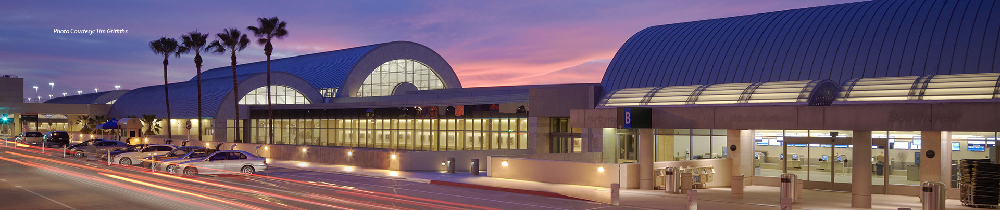
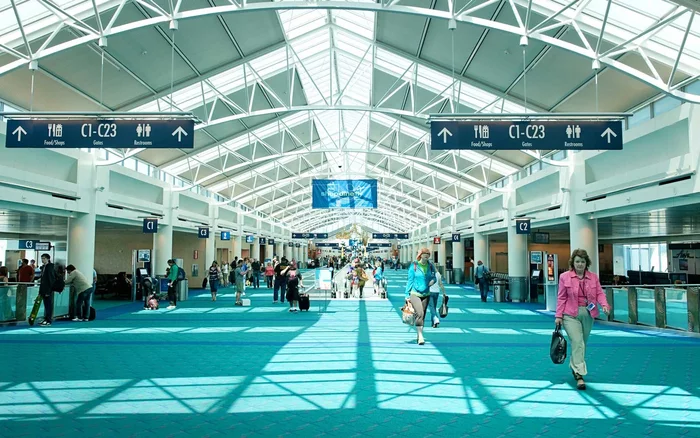
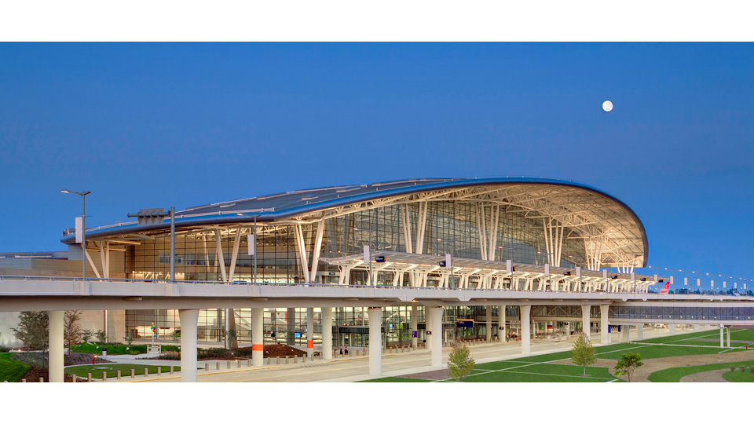
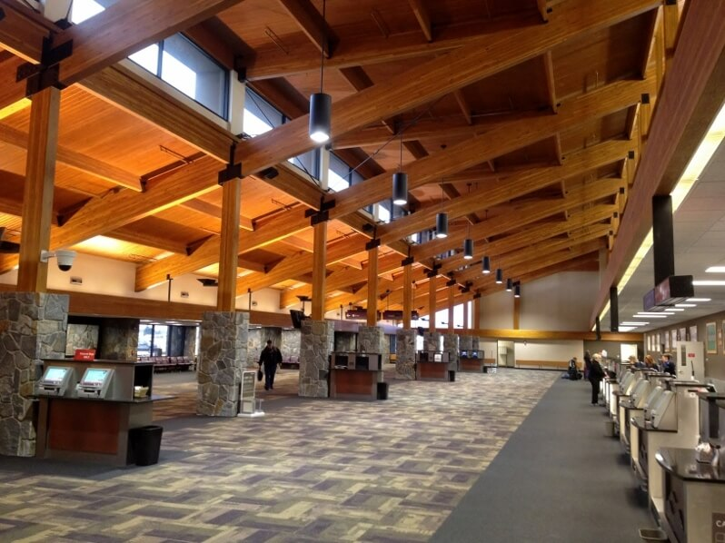

This airport radiates tranquility, whilst being a very efficient and reliable airport. With 24 restaurants, free wifi, and consistant on-time arrivals, it is one of the best.
Excels at on-time arrivial
A great airport, with a popular souvenir shop to remember the trip by
Very reliable airport
The most popular airport in Montana now
